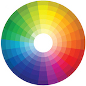

Color
Picking what color scheme for your website is very important. Colors can convey meanings or emotions to the user. You also want your website to have contrast with colors so it can reduce eyestrain on the user. The website needs to look pleasant to the user’s eyes and keeps the user to stay on the website.
Consistency
Consistency is probably the most important principle of website design. The web developer needs to provide quality experience to the users. As a web developer you need to be consistent with the design and content of the webpage. You need to be consistent with colors, design, content, layout, and so much more. Consistency helps your website look professional and makes you a better web developer.